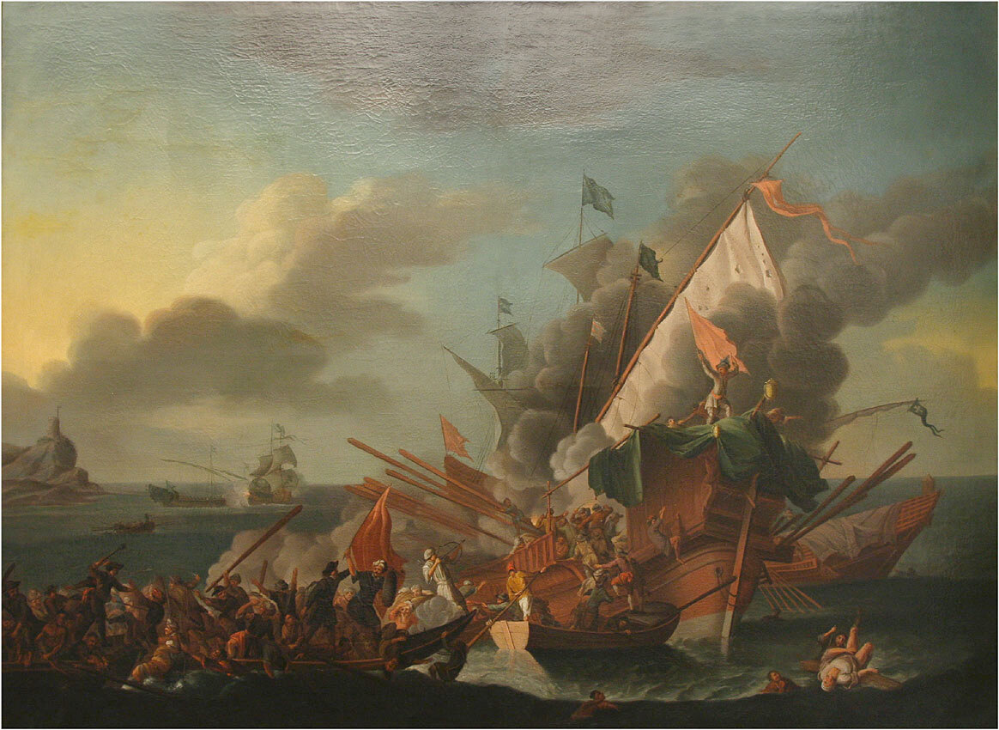
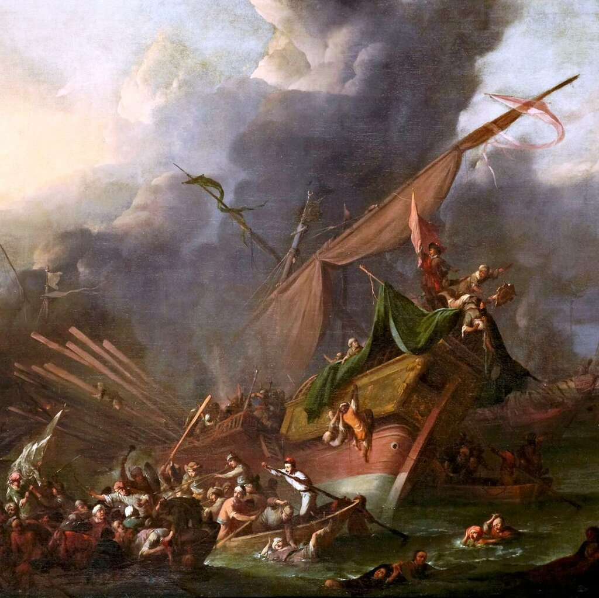

Улудж Али против галер Мальтийского ордена
Но теперь-то все отлично
Складывается для нас.
Лопе де Вега, Набережная в Севилье. Перевод Мих. Донского
Итак, командующий южным крылом турецкого флота алжирский бейлербей Улудж Али паша принимает решение действовать самостоятельно, не связывая себя никакими обязательствами перед остальными кораблями турецкого флота. Историки, анализировавшие битву при Лепанто, иногда пишут, что если бы Улудж Али не увлекся тактическими играми с Дориа, а сразу же пошел на выручку главнокомандующему турецким флотом Али паше, судьба сражения была бы иной. Не хватило каких-то тридцати минут. Я не верю в такие расчеты. Судьба выбирает реальные события, а на умозрительные варианты. А картина была такой, какой сложилась в ходе реализации всех предварительных планов и расчетов. Турки строили свои замыслы с расчетом на победу, а не на оборону. А для победы требовались активные действия, вроде описанного выше первоначального замысла по выходу турецкой эскадры Улудж Али в тыл христианам. Не сложилось, не так легла карта. Но это уже другой вопрос.

Сражение при Лепанто. Художник Pieter Brünniche (Копенгаген, Дания, 1762)
У алжирского бейлербея не оставалось иного варианта, кроме как выйти из боя и прорываться в Стамбул. Он оставил более половины своих галер драться с эскадрой Дориа, остальные корабли повел на северо-запад, в открытое море. Но тут судьбе было угодно разыграть еще одну партию, на которые она так щедра: прямо по курсу отряда Улудж Али оказалась Капитана Мальтийского ордена под командованием Пьетро Джустиниани. Флаг госпитальеров для алжирского корсара – что красная тряпка для быка: ничто не могло заставить его пройти мимо. Улудж Али не забыл еще вкус победы над мальтийскими рыцарями, которую он одержал год назад (мы подробно писали об этом сражении).
Флагманская мальтийская Капитана только что вышла победителем в схватке с двумя турецкими галерами. Она стояла без хода в отдалении от других кораблей христианского флота, экипаж приводил корабль в порядок. Четыре турецких галиота по приказу Улудж Али окружили Капитану и открыли по ней огонь, после чего со всех сторон на ее палубу устремились абордажные партии. Силы были неравными и спустя короткое время сопротивление оказывала лишь горстка защитников галеры во главе с неоднократно раненым капитаном Пьетро Джустиниани. До последних сил защищал знамя Мальтийского ордена арагонец Дон Мартин де Феррера: турки смогли забрать святыню госпитальеров, только отрубив сжимавшую его руку рыцаря.
Мы не знаем достоверно судьбу последних героев Мальтийского флагмана. Существует несколько легенд. Согласно одной из них, один из рабов-мусульман капитана Джустиниани вытащил его из боя и укрыл под палубой, забросав грудой одеял и матрацев. После сражения раб этот якобы получил свободу и деньги для возвращения на родину, но остался со своим хозяином до конца его жизни. По другой легенде, Джустиниани и другие оставшиеся в живых рыцари заплатили захватившим их алжирцам большую сумму наличными и серебром, после чего были освобождены. Семьдесят лет спустя после сражения Кятиб Челеби написал в своей книге, что бейлербей Алжира лично отрубил голову Джустииниани. Это сомнительно, как сомнительным является и утверждение самого Улудж Али, что он в бою захватил две мальтийские галеры.
Улудж Али оставил себе штандарт ордена в качестве трофея, но в последующем хронисты Мальтийского ордена писали, что это было не подлинное мальтийское знамя, а лишь его копия для церемоний, подлинный же штандарт был якобы заранее спрятан рыцарями.
Увязнув в бою с мальтийским флагманом, Улудж Али не заметил, как на помощь мальтийцу подошли галеры резерва христиан во главе с Дон Хуаном де Кардона. Началась рукопашная схватка османов с солдатами испанских терций. Туркам удалось дойти до грот мачты галеры де Кардона, но испанцы были упорнее и, несмотря на большие потери, отстояли свой корабль. Судьба остальных была не столь удачна, турки захватили и взяли на буксир восемь христианских галер.
Но уйти с трофеями кораблям Улудж Али не удалось. К месту схватки подоспели галеры Джованни Андреа Дориа, приближались и основные силы христиан, освободившиеся после поражения турок в центре баталии. Османы оказались под огнем противника со всех сторон. Однако они не отказались от боя, беря на абордаж одну галеру за другой. Тосканская галера San Giovanni , потеряв 60 человек убитыми и более 150 ранеными, вышла из боя. Досталось и галере Дориа: от огня турок флагман потерял до 7 процентов гребцов убитыми.

И все же сказывалось превосходство сил со стороны христиан. Настало время подумать об окончательном выходе из боя. Пришлось отказаться и от захваченных галер противника, перерубив буксирные тросы. Подняв паруса и воспользовавшись усиливающимся зюйд-зюйд-остом, галеры Улудж Али взяли курс на пролив между островом Оксия и островом Курцолари (который, как мы помним, сейчас просто гора на материковой части Греции).
Об отходе эскадры Улудж Али и ее пути к Стамбулу мы расскажем в следующий раз.